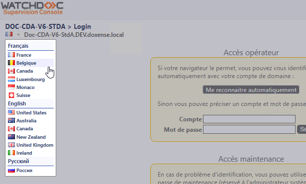
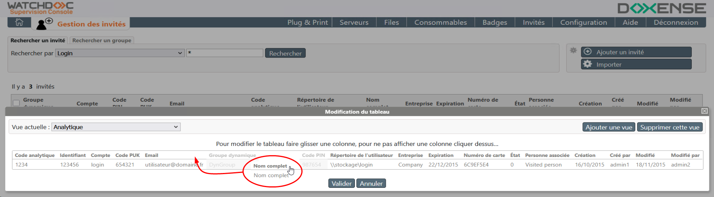
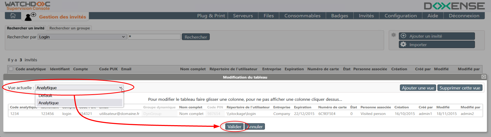
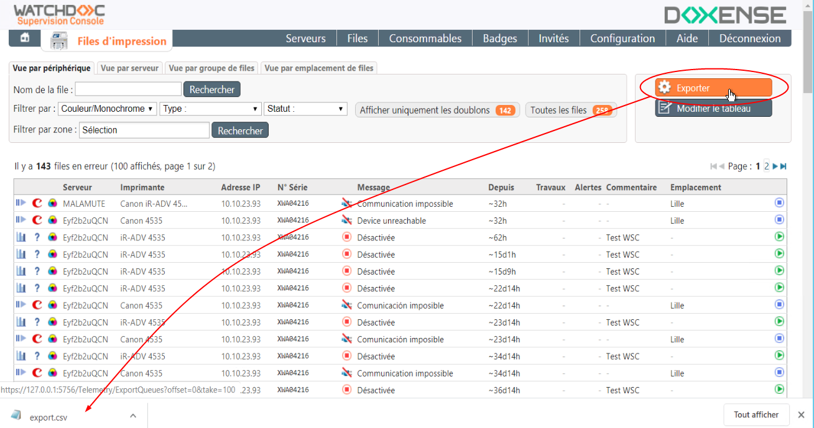

Principe
Watchdoc Supervision Console (WSC) est un outil permettant, à partir d'une seule interface, de superviser l'activité de tous les composants du parc d'impression pilotés par Watchdoc (serveurs, files, WES et consommables). Cet outil facilite ainsi la gestion du parc d'impression, notamment dans le cas où ce parc est important.
Depuis la version 6, WSC n'est plus soumis à licence spécifique : la licence Watchdoc suffit. Si vous disposiez d'une licence WSC pour une version WSC antérieure à la v6, pensez à réinitialiser la licence WSC.
Depuis la version 6.1, WSC est sécurisée contre les Attaques par force-brute Une attaque par force brute (bruteforce attack) consiste à tester, l’une après l’autre, chaque combinaison possible d’un mot de passe ou d’une clé pour un identifiant donné afin se connecter au service ciblé. Il s’agit d’une méthode ancienne et répandue chez les pirates. Le temps nécessaire à celle-ci dépend du nombre de possibilités, de la vitesse que met l’attaquant pour tester chaque combinaison et des défenses qui lui sont opposées. Ce type d’attaque étant relativement simple, un organisme peut disposer de systèmes permettant de se protéger de ce type de comportement. La première ligne du système de défense est le blocage de comptes après un nombre limité d’échecs d’authentification pour un même identifiant. Le fonctionnement de l’attaque par force brute est proche de l’attaque par credential stuffing, mais est moins élaborée. (Source : https://www.cnil.fr/) : un délai d'attente incrémental est imposé après chaque tentative d'authentification infructueuse.
Une attaque par force brute (bruteforce attack) consiste à tester, l’une après l’autre, chaque combinaison possible d’un mot de passe ou d’une clé pour un identifiant donné afin se connecter au service ciblé. Il s’agit d’une méthode ancienne et répandue chez les pirates. Le temps nécessaire à celle-ci dépend du nombre de possibilités, de la vitesse que met l’attaquant pour tester chaque combinaison et des défenses qui lui sont opposées. Ce type d’attaque étant relativement simple, un organisme peut disposer de systèmes permettant de se protéger de ce type de comportement. La première ligne du système de défense est le blocage de comptes après un nombre limité d’échecs d’authentification pour un même identifiant. Le fonctionnement de l’attaque par force brute est proche de l’attaque par credential stuffing, mais est moins élaborée. (Source : https://www.cnil.fr/) : un délai d'attente incrémental est imposé après chaque tentative d'authentification infructueuse.
Depuis la version 6.1, WSC n'accepte que les pilotes certifiés. Il est donc nécessaire de réinstaller les pilotes existants (cf. WSC - Créer les pilotes d'impression).
Accéder à WSC
-
Pour accéder à la console de supervision, ouvrez votre navigateur à l'adresse de votre serveur d'impression et ajoutez le numéro de port 5756 (https://server_name:5756) ou cliquez sur le raccourci ajouté automatiquement sur le bureau en phase d'installation (si vous avez accepté cette option).
-
Authentifiez-vous, soit depuis :
-
l'accès opérateur vous permet de vous connecter avec vos identifiants Windows. C'est la méthode préférée.
-
l'accès maintenance, qui ne nécessite qu'un mot de passe, est réservé aux opérations de maintenance ou lorsque vous ne pouvez pas vous connecter avec la première méthode.
-
-
cliquez sur Se connecter pour accéder au Menu Principal.
Depuis la version 6.0.4770, il est possible de modifier la langue d'affichage de WSC depuis la page d'authentification :

{kind=link}
Présentation des modules
Les modules de supervision disponibles dans la Console de Supervision de Watchdoc sont les suivants :
{kind=link}
-
Serveurs d'impression : permet d'accéder à la supervision de tous les serveurs contrôlés par Watchdoc ;
-
Files d'impression : permet d'accéder à la supervision de toutes les files contrôlées par Watchdoc ;
-
Opérations Plug and Print : permet d'accéder à l'outil de création des files contrôlées par Watchdoc ;
-
Templates d'imprimantes : permet d'accéder à l'outil d'association entre template d'imprimante et pilote ;
-
Consommables : permet d'accéder à la supervision des consommables de toutes les files contrôlées par Watchdoc ;
-
Gestion des spouleurs Watchdoc : permet d'accéder à la supervision des files et travaux en attente sur le spouleur Watchdoc ;
-
Gestion des badges : permet d'accéder à la gestion des badges permettant aux utilisateurs de s'authentifier dans Watchdoc ;
-
Gestion des invités : permet d'accéder à la gestion de l'annuaire des invités autorisés à s'authentifier dans Watchdoc ;
-
Configuration avancée : permet d'accéder à d'autres modules de gestion destinés à l'administration avancée de WSC ;
-
Gestion des codes analytiques : permet de gérer les codes analytiques utilisés par la fonction "Codes de refacturation".
La Configuration Avancée contient les modules d'administration suivants :
{kind=link}
-
Service : permet d'accéder aux outils de configuration générale de la Console de Supervision ;
-
Configuration PnP : permet d'accéder au module Plug And Print permettant la détection automatique des nouvelles files d'impression ;
-
Base de badges : permet d'accéder à la configuration de la base de données dans laquelle sont enregistrés les badges ;
-
Annuaires utilisateurs : permet d'accéder à la liste de tous les annuaires, de les synchroniser, mais aussi de déclarer de nouveaux annuaires ;
-
Gestion de la licence : permet d'accéder aux informations relatives à la licence WSC et à son interface de gestion (ce module ne concerne que les versions WSC installées avec les versions Watchdoc antérieures V5.5).
-
Maintenance des serveurs : permet d'accéder à l'interface d'activation et de définition de la fréquence des opérations de maintenance ;
-
Envois de mails : permet d'accéder à l'interface de configuration des notifications par mails ;
-
Base des invités : permet d'accéder aux informations de gestion de la base de données dans laquelle sont enregistrés les invités ;
-
Profils de sécurité : permet d'accéder aux droits d'accès et profils d'administration ;
Modifier l'apparence d'un tableau de résultats (créer des vues)
Vous pouvez personnaliser l'apparence d'un tableau de résultats dans WSC (quel que soit l'objet de la liste) en créant de nouvelles vues.
Pour ajouter des vues :
-
depuis le tableau de résultats, dans l'encart des actions (en haut à droite), cliquez sur le bouton ;
Si le bouton n'est pas dans la liste, cliquez d'abord sur la roue dentée pour faire apparaître tous les boutons d'action.
-
dans l'interface Modification du tableau, cliquez sur le bouton :

-
Saisissez ensuite un nom dans le champ Nom de la nouvelle vue.
Un contrôle s'applique sur le champ pour empêcher la saisie de caractères interdits (tels que \";alert('xss');//, par exemple). -
glissez-déposez les colonnes à l'endroit où vous souhaitez les voir s'afficher :

-
pour ne plus afficher une colonne dans le tableau, cliquez sur son en-tête : ce dernier est alors grisé ;
-
dès que le tableau correspond à celui que vous souhaitez, cliquez sur le bouton .
èLa vue créée est alors celle qui s'affiche par défaut.
{kind=link}
Modifier la vue affichée
La vue "Default" s'affiche par défaut.
S'il existe plusieurs vues, c'est la dernière vue créée qui s'affiche par défaut.
Pour modifier cette vue,
-
cliquez sur le bouton ,
-
dans l'interface Modification du tableau, sélectionnez la Vue actuelle dans la liste des vues disponibles ;
-
cliquez sur le bouton .

{kind=link}
Exporter un tableau
Pour exporter le contenu d'un tableau, quel qu'en soit l'objet :
-
dans le tableau, rendez-vous sur l'encart de droite affichant les actions ;
-
si elle est affichée, cliquez sur la roue dentée
 pour afficher la totalité des boutons d'action ;
pour afficher la totalité des boutons d'action ; -
cliquez sur le bouton ;
-
cliquez sur le fichier export.csv téléchargé par le navigateur ou enregistrez-le dans votre espace de travail :
